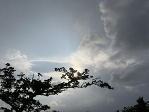
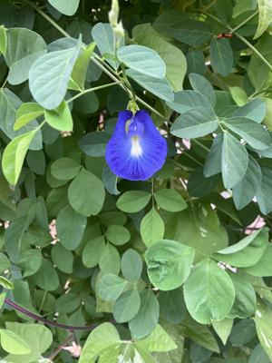

うるがいの話 ある日
最新: バタフライピーの花【うるがいの話 ある日】とは 一日だけのプログです
『うるがいの話』の最新一日だけのプログで、通信料が少なく経済的だ。カニの画像をクリックすると全ての日付が載る『うるがいの話』サイトを表示します
|
|
【うるがいの話】 うるがい(ｳﾙｶﾞｲ urugai)とは、『もずくがに』の名前でとても大きくなります。 |
|---|---|
|
|
【カミマヤーの話】 猫のことを方言でマヤーといいます。カミマヤー（kamimayaa）とは、神の猫のことです。 |
|
【たながぁの音楽】 たながぁ（ﾀﾅｶﾞｰ tanagaa）とは手長えびのことで、何種類かあり大きいのは車 エビぐらいになります。 |

|
【ぶながぁの話】 ぶながぁ(ﾌﾞﾅｶﾞｰ bunagaa)とは、赤い髪の毛、赤い身体、そして身長は１ｍ２０ｃｍ ぐらい、川の蟹を食べているの目撃された。場所は沖縄県国頭郡大宜味村のと ある村僕の隣近所に住んでいる爺さんから、聞いた話です。 |
|
|
【ギーマの話】 ギーマ(giima)とは、山原の里山に咲くスズランに似た、 花を付けます。実は食べられます、 気が付くと口の周りが紫になっています。 |
2025年07月16日 (水）バタフライピーの花
16:56

ジョギングの途中、とある民家で今年初めてバタフライピーの花を
見た。

ジョギングを始める前に、ストレッチをしていると老人が、『毎日
走ってますか？』と声をかけられた。ここ最近、ペットボトルを持
って、ゆっくりと走る老人だなと気が付いていた。前立腺がんと診
断され、手術でなく薬で対応しているとのこと。ただ、副作用で筋
肉が落ちてきたので、筋肉をつけるため走っている（ほとんど走っ
ていないが）らしい。お年は、８０歳ですかと尋ねると８５歳です
と答えた。ホー、８５歳で習慣でもないのにジョギングするとはキ
ツイですよねと励ます。それにしても、よく人から声をかけられる
誕生日が、一日違います星座は・・ですよねと、琉球補聴器では店
員に言われた。昨日、さっそく字幕なしで映画が見れるか、試した
聞こえました。朝、鳥の鳴き声がうるさく聞こえました。ただ、高
音域は、メタリック的な不自然な音がします。まー、慣れるのしょ
う。